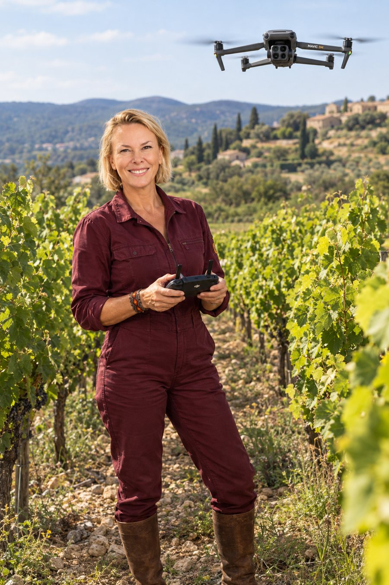

About
A company from the Luberon,
rooted in the vineyards.
Agritech Provence was founded in Apt, Provence, in January 2026, on one conviction: today's tools can make a winegrower's work lighter and the profession more attractive.

Founder and president · drone pilot
Julie Demarigny
The granddaughter of farmers, Julie spent twenty years in digital transformation, at Warner Bros. in Europe and then in Los Angeles, and at MUFG. Back in Provence, she founded Agritech Provence to put technology at the service of those who grow our food. She flies every plot herself.
Laureate for the Vaucluse of 101 Femmes Entrepreneures and winner for the Sud region of Be a Boss in 2026.
They opened their vineyards to us
9 estates and 2 cooperative wineries
In 2026, winegrowers in Provence agreed to take part: letting us fly over their plots all summer, opening their spray records to us, and allowing their results to be shared, anonymised. Among them, Château de Mille and the Cave de Louérion. Without them, there would be nothing to show. Thank you.
Our commitment
100% organic farming
Agritech Provence works exclusively with organic farming. Each estate keeps its own data; published results are always anonymised.